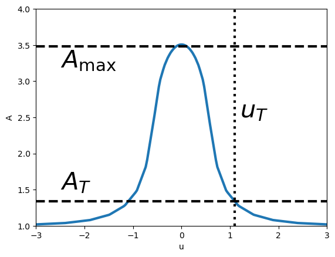

#Nothing implemented yet, just a dump for future work
def A_ps(u):
return (u**2 + 2) / (u * (u**2 + 4)**(1/2))
def f_func(x):
return (2 + x)/(x*(4+x))**(0.5) - 1
def t_fwhm_gondolo(t_e, umin):
deltab = f_func(umin**2)
bw2 = 2* f_func(deltab)
w_b = 2*(bw2 - umin**2)**(1/2)
return w_b * t_e
def t_E_from_t_fwhm(t_fwhm, umin):
deltab = f_func(umin**2)
bw2 = 2* f_func(deltab)
w_b = 2*(bw2 - umin**2)**(1/2)
return t_fwhm / w_b
def ellip(phi, m):
return quad(lambda x: np.sqrt(1 - m**2*np.sin(x)**2), 0, phi)[0]
def theta_max(u, rho):
if u <= rho:
return np.pi/2
else:
return np.arcsin(rho/u)
def A_gould(u, rho):
return A_ps(u) * 4*u / (np.pi * rho) * ellip(theta_max(u, rho), u/rho)
def f_func_finite(u, rho):
return A_gould(u, rho) - 1
def t_fwhm_gondolo(t_e, umin):
deltab = f_func(umin**2)
bw2 = 2* f_func(deltab)
w_b = 2*(bw2 - umin**2)**(1/2)
return w_b * t_e
def t_fwhm_gondolo_finite(t_e, umin, rho):
func = lambda b: f_func_finite(b,rho) - f_func_finite(umin**2,rho)*0.5
bw = fsolve(func,1)[0]
w_b = 2*(bw**2 - umin**2)**(1/2)
return w_b * t_e
# def t_E_from_t_fwhm_finite(t_fwhm, umin, rho):
# if rho >=10:
# return t_fwhm/rho/2
# func = lambda b: f_func_finite(b,rho) - f_func_finite(umin**2,rho)*0.5
# bw = fsolve(func,1)[0]
# w_b = 2*(bw**2 - umin**2)**(1/2)
# return t_fwhm / w_b
def t_E_from_t_fwhm_finite(t_fwhm, umin, rho):
if rho >=1:
return t_fwhm/rho/2
return t_E_from_t_fwhm(t_fwhm, umin)
def magnification_finite_new(u, rho):
integrand = lambda r, theta: integrand_polar(r, theta, u)
result, _ = nquad(integrand, [[0, rho], [0, 2 * np.pi]])
return result / (np.pi * rho**2)
def u_fwhm_func(rho, umin):
Amax = magnification_finite_new(umin, rho)
func = lambda u: magnification_finite_new(u, rho) - (1+(1-Amax)/2)
return fsolve(func, 1, xtol=1e-2)[0]
def t_duration(t_e, umin, finite, rho=None, ut=1):
if not finite:
return 2*(ut**2 - umin**2)**(1/2) * t_e
else:
if ut_func_new(rho, 1.34)[0] <= umin:
return 0
return (2*(ut_func_new(rho, 1.34)**2 - umin**2)**(1/2) * t_e)[0]lightcurves
Modeling and parameter extraction of lightcurves
u_vals = np.logspace(-2, 1, 30)
rho_vals = np.logspace(-2, 1, 30)
z_vals = np.array([[magnification_finite_new(u, rho) for u in u_vals] for rho in tqdm(rho_vals)])
mag_finite_interp = RegularGridInterpolator((rho_vals, u_vals), z_vals, method='linear', bounds_error=False, fill_value=None)
def fast_magnification_finite_new(u, rho):
return mag_finite_interp([float(rho), float(u)])
def fast_u_fwhm_func(rho, umin):
Amax = fast_magnification_finite_new(umin, rho)
if Amax<1:
return 0
func = lambda u: fast_magnification_finite_new(u, rho) - (1+(Amax-1)/2)
return fsolve(func, 1)
# z_u_vals = np.array([[fast_u_fwhm_func(rho, u) for u in u_vals] for rho in tqdm(rho_vals)])
# u_fwhm_interp = RegularGridInterpolator((rho_vals, u_vals), z_u_vals, method='linear', bounds_error=False, fill_value=None)100%|██████████| 30/30 [01:54<00:00, 3.81s/it]z_u_vals = np.array([[fast_u_fwhm_func(rho, u) for u in u_vals] for rho in tqdm(rho_vals)])
u_fwhm_interp = RegularGridInterpolator((rho_vals, u_vals), z_u_vals, method='linear', bounds_error=False, fill_value=None) 0%| | 0/30 [00:00<?, ?it/s]/Users/nolansmyth/opt/anaconda3/lib/python3.9/site-packages/scipy/optimize/_minpack_py.py:177: RuntimeWarning: The iteration is not making good progress, as measured by the
improvement from the last ten iterations.
warnings.warn(msg, RuntimeWarning)
100%|██████████| 30/30 [00:00<00:00, 38.77it/s]def t_fwhm(t_e, umin, finite, rho=None, ut=1):
if not finite:
return t_fwhm_gondolo(t_e, umin)
else:
Amax = 1 + 1/rho
u_fwhm = u_fwhm_interp([rho, umin])[0]
if u_fwhm<=umin:
return 0
return 2*(u_fwhm**2 - umin**2)**(1/2) * t_e
def t_e_from_fwhm(t_fwhm, umin, finite, rho=None):
if not finite:
return t_fwhm / t_fwhm_gondolo(1, umin)
else:
u_fwhm = u_fwhm_interp([rho, umin])[0]
if u_fwhm<=umin:
print('u_fwhm<=umin')
return 1e-3
return t_fwhm / (2*(u_fwhm**2 - umin**2)**(1/2))t_e_from_fwhmumin_arr = np.logspace(-1, 0.4, 100)
rho= 1
fast_Amax_arr = np.array([fast_magnification_finite_new(umin, rho) for umin in umin_arr])
fast_uhm_arr = np.array([u_fwhm_interp([rho, umin]) for umin in umin_arr])
ut_arr = np.array([ut_func_new(1.2, Amax) for Amax in fast_Amax_arr])
uhm_arr = np.array([ut_func_new(1.2, 1+(Amax-1)/2) for Amax in fast_Amax_arr])
uhm_point_arr = np.array([(2* f_func(f_func(umin**2)))**(1/2) for umin in umin_arr])# plt.plot(umin_arr, Amax_arr)
plt.plot(umin_arr, fast_Amax_arr)
plt.axhline(1.34, color='k', linestyle='--')
plt.xlabel(r'$u_{\rm min}$')
plt.ylabel(r'$A_{\rm max}$')
plt.title(r'$\rho = $' + str(rho))
plt.xscale('log')
plt.show()plt.figure(figsize=(10,5))
plt.subplot(121)
rho= 0.01
fast_uhm_arr = np.array([u_fwhm_interp([rho, umin])[0] for umin in umin_arr])
uhm_point_arr = np.array([(2* f_func(f_func(umin**2)))**(1/2) for umin in umin_arr])
fast_Amax_arr = np.array([fast_magnification_finite_new(umin, rho) for umin in umin_arr])
ut_arr = np.array([ut_func_new(rho, Amax) for Amax in fast_Amax_arr])
plt.plot(umin_arr, fast_uhm_arr, label='uhm finite')
plt.plot(umin_arr, uhm_point_arr, label='uhm point', linestyle='--')
plt.plot(umin_arr, ut_arr, label='ut')
plt.xlabel(r'$u_{min}$')
plt.ylabel(r'$u_{hm}$')
plt.title(r'$\rho = $ ' + str(rho))
plt.xscale('log')
plt.yscale('log')
plt.legend()
plt.subplot(122)
rho= 1.5
fast_uhm_arr = np.array([u_fwhm_interp([rho, umin])[0] for umin in umin_arr])
uhm_point_arr = np.array([(2* f_func(f_func(umin**2)))**(1/2) for umin in umin_arr])
fast_Amax_arr = np.array([fast_magnification_finite_new(umin, rho) for umin in umin_arr])
ut_arr = np.array([ut_func_new(rho, Amax) for Amax in fast_Amax_arr])
plt.plot(umin_arr, fast_uhm_arr, label='uhm finite')
plt.plot(umin_arr, uhm_point_arr, label='uhm point', linestyle='--')
plt.plot(umin_arr, ut_arr, label='ut')
plt.xlabel(r'$u_{min}$')
plt.title(r'$\rho = $ ' + str(rho))
plt.xscale('log')
plt.yscale('log')
plt.show()rho = 2.1
# rho = 0.01
ut = 1
umin_arr = np.logspace(np.log10(0.01), np.log10(2), 100)
tfwhm_arr = np.array([t_fwhm(10, umin, True, rho, ut_func_new(rho, 1.34)) for umin in umin_arr])
tfwhm_arr_point = np.array([t_fwhm(10, umin, False, rho, ut_func_new(rho, 1.34)) for umin in umin_arr])
t_duration_arr = np.array([t_duration(10, umin, True, rho, 1) for umin in umin_arr])
rho_arr = np.linspace(0.01, 3, 100)
tfwhm_arr2 = np.array([t_fwhm(10, 0.1, True, rho, ut_func_new(rho, 1.34)) for rho in rho_arr])
tfwhm_arr_point2 = np.array([t_fwhm(10, 0.1, False, rho, ut_func_new(rho, 1.34)) for rho in rho_arr])
t_duration_arr2 = np.array([t_duration(10, 0.1, True, rho, 1) for rho in rho_arr])plt.figure(figsize=(10,5))
plt.subplot(121)
plt.title('t_e = 10, rho = {}'.format(rho))
plt.plot(umin_arr, tfwhm_arr, label='fwhm finite')
plt.plot(umin_arr, tfwhm_arr_point, label = 'fwhm point', linestyle='--')
plt.plot(umin_arr, t_duration_arr, label='duration', linestyle='--')
plt.ylabel(r'$t$')
plt.xlabel(r'$u_{\rm min}$')
# plt.xscale('log')
plt.legend()
plt.subplot(122)
plt.plot(rho_arr, tfwhm_arr2)
plt.plot(rho_arr, tfwhm_arr_point2, linestyle='--')
plt.plot(rho_arr, t_duration_arr2, linestyle='--')
plt.title(r't_e = 10, u_min = 0.1')
plt.xlabel(r'$\rho$')
plt.show()def u_func(umin, t, t_e):
return np.sqrt(umin**2 + (t/t_e)**2)
def t_fwhm_point(umin, t_e):
t_vals = np.linspace(-5*t_e, 5*t_e, 2000)
A_vals = np.array([A_ps(u_func(umin, t, t_e)) for t in t_vals])
A_max = np.max(A_vals)
t_0 = t_vals[np.argmax(A_vals)]
half_max_indices = np.where(np.isclose(A_vals, A_max/2, atol=0.1))[0]
t_fwhm = t_vals[half_max_indices[-1]] - t_vals[half_max_indices[0]]
return t_fwhm
def t_fwhm_finite(umin, t_e, rho):
t_vals = np.linspace(-5*t_e, 5*t_e, 2000)
A_vals = np.array([A_gould(u_func(umin, t, t_e), rho) for t in t_vals])
A_max = np.max(A_vals)
t_0 = t_vals[np.argmax(A_vals)]
half_max_indices = np.where(np.isclose(A_vals, A_max/2, atol=0.1))[0]
t_fwhm = t_vals[half_max_indices[-1]] - t_vals[half_max_indices[0]]
return t_fwhmumin = 1.2
deltab = f_func(umin**2)
bw2 = 2* f_func(deltab)
print(f_func(umin**2)/f_func(bw2))1.999999999999998rho=0.1
t_fwhm_gondolo_finite(1, 0.2, rho)/var/folders/qd/09mj47cx551c65glw6y47d6r0000gn/T/ipykernel_62183/2340527698.py:22: RuntimeWarning: invalid value encountered in sqrt
return quad(lambda x: np.sqrt(1 - m**2*np.sin(x)**2), 0, phi)[0]
/var/folders/qd/09mj47cx551c65glw6y47d6r0000gn/T/ipykernel_62183/2340527698.py:22: IntegrationWarning: The occurrence of roundoff error is detected, which prevents
the requested tolerance from being achieved. The error may be
underestimated.
return quad(lambda x: np.sqrt(1 - m**2*np.sin(x)**2), 0, phi)[0]
/var/folders/qd/09mj47cx551c65glw6y47d6r0000gn/T/ipykernel_62183/2340527698.py:22: IntegrationWarning: Extremely bad integrand behavior occurs at some points of the
integration interval.
return quad(lambda x: np.sqrt(1 - m**2*np.sin(x)**2), 0, phi)[0]1.9595917942265424umin = 0.2
t_e = 10
t_arr = np.linspace(-20,20,1000)
u_arr = u_func(umin, t_arr, t_e)
rho = 0.7
A_fs_arr = np.array([A_gould(u, rho) for u in u_arr])
A_ps_arr = np.array([A_ps(u) for u in u_arr])
A_fs_int_arr = np.array([fast_magnification_finite_new(u, rho) for u in u_arr])#This is ~ 2*t_E for ut=1 and umin<<1
t_duration(umin, 1, t_e, 0)/t_e0.003712691344232568#Novati relating fwhm to t_e for umin << 1
print(np.sqrt(12)*umin*t_e)
#Explicit calculation of fwhm
print(t_fwhm_point(umin, t_e))6.928203230275509
7.75387693846924#Finite source calculation, small source
print(t_fwhm_finite(umin, t_e, 0.01))
#Finite source calculation, larger source
print(t_fwhm_finite(umin, t_e, 0.5))7.75387693846924
13.056528264132062plt.plot(u_arr, A_ps_arr, label=r"Point Source", ls='--', color='b')
plt.plot(u_arr, A_fs_int_arr, label=r"$\rho = $" + ' ' + str(rho) + ' ' + 'integrated', color='g')
plt.axvline(fast_u_fwhm_func(rho, umin), color='g', linestyle='--')
plt.ylim(1,6)
# plt.ylim(5,50)
# plt.xlim(-20,20)
# plt.xlim(-2,2)
plt.xlabel("u")
plt.ylabel("Magnification")
plt.legend()
# plt.savefig("figures/ps_fs_magnification.pdf")
plt.show()plt.plot(t_arr, A_ps_arr, label=r"Point Source", ls='--')
plt.plot(t_arr, A_fs_arr, label=r"$\rho = $" + ' ' + str(rho))
plt.plot(t_arr, A_fs_int_arr, label=r"$\rho = $" + ' ' + str(rho) + ' ' + 'integrated')
plt.ylim(1,6)
# plt.ylim(5,50)
plt.xlim(-20,20)
# plt.xlim(-2,2)
plt.xlabel("Time")
plt.ylabel("Magnification")
plt.legend()
# plt.savefig("figures/ps_fs_magnification.pdf")
plt.show()plt.style.use("../examples/style.mplstyle")
# plt.style.use("../examples/style_new.mplstyle")
sns.set_palette("colorblind")umin = 0.2
t_e = 10
t_arr = np.linspace(-24,24,1000)
u_arr = u_func(umin, t_arr, t_e)
rho = 0.7
A_fs_arr = np.array([A_gould(u, rho) for u in u_arr])
A_ps_arr = np.array([A_ps(u) for u in u_arr])plt.plot(t_arr, A_fs_arr, label=r"$\rho = $" + ' ' + str(rho), linewidth=3)
plt.plot(t_arr, A_ps_arr, label=r"Point Source", ls='--', linewidth=3)
plt.ylim(1,6)
plt.xlim(-20,20)
# plt.xlim(-2,2)
plt.xlabel("Time")
plt.ylabel("Magnification")
plt.legend()
# plt.savefig("figures/ps_fs_magnification.pdf")
# plt.savefig("../examples/figures/ps_fs_magnification.pdf")
plt.show()# plt.plot(t_arr, A_fs_arr, label=r"$\rho = $" + ' ' + str(rho), linewidth=3)
plt.plot(t_arr, A_ps_arr, label=r"Point Source", linewidth=3)
plt.axhline(1.34, color='k', linestyle='--', label=r'$A_T$',linewidth=3)
plt.axvline(-10, color='k', linestyle=':', label=r'$u_T$',linewidth=3)
plt.axvline(10, color='k', linestyle=':', label=r'$u_T$',linewidth=3)
plt.text(-20, 1.6, r'$A_T$', fontsize=30)
# plt.text(1.2, 2.5, r'$u_T$', fontsize=30)
plt.ylim(1,6)
plt.xlim(-24,24)
# plt.xlim(-2,2)
plt.xlabel("Time")
plt.ylabel("Magnification")
# plt.legend()
# plt.savefig("figures/ps_fs_magnification.pdf")
# plt.savefig("../examples/figures/ps_fs_magnification.pdf")
# plt.savefig("../examples/figures/t_dur_lightcurve.pdf")
plt.show()u_arr_2 = np.linspace(-3,3,200)
rho = 0.6
A_fs_arr_2 = np.array([A_gould(abs(u), rho) for u in u_arr_2])
A_fs_int_arr2 = np.array([fast_magnification_finite_new(u, rho) for u in abs(u_arr_2)])
# plt.plot(u_arr_2, A_fs_arr_2, linewidth=3,color='C0')
plt.plot(u_arr_2, A_fs_int_arr2, linewidth=3,color='C0')
plt.axhline(1.34, color='k', linestyle='--', label=r'$A_T$',linewidth=3)
plt.axvline(1.1, color='k', linestyle=':', label=r'$u_T$',linewidth=3)
plt.axhline((1 + 4/rho**2)**(1/2), color='k', linestyle='--', label=r'$A_\rm{max}$',linewidth=3 )
plt.text(1.2, 2.5, r'$u_T$', fontsize=30)
plt.text(-2.5, 1.5, r'$A_T$', fontsize=30)
plt.text(-2.5, 3.2, r'$A_{\rm{max}}$', fontsize=30)
plt.ylim(1,4)
plt.xlim(-3,3)
# plt.xlim(-2,2)
plt.xlabel("u")
plt.ylabel("A")
# plt.legend(fontsize=16)
# plt.savefig("figures/ps_fs_magnification.pdf")
# plt.savefig("../examples/figures/ps_fs_magnification.pdf")
# plt.savefig("../examples/figures/A_vs_u_lightcurve.pdf")
plt.show()
(1 + 4/0.6**2)**(1/2)3.48010216963685import os
print(os.environ['PATH'])/opt/hostedtoolcache/Python/3.9.18/x64/bin:/opt/hostedtoolcache/Python/3.9.18/x64:/snap/bin:/home/runner/.local/bin:/opt/pipx_bin:/home/runner/.cargo/bin:/home/runner/.config/composer/vendor/bin:/usr/local/.ghcup/bin:/home/runner/.dotnet/tools:/usr/local/sbin:/usr/local/bin:/usr/sbin:/usr/bin:/sbin:/bin:/usr/games:/usr/local/games:/snap/binos.environ['PATH'] += os.pathsep + '/Library/TeX/texbin'